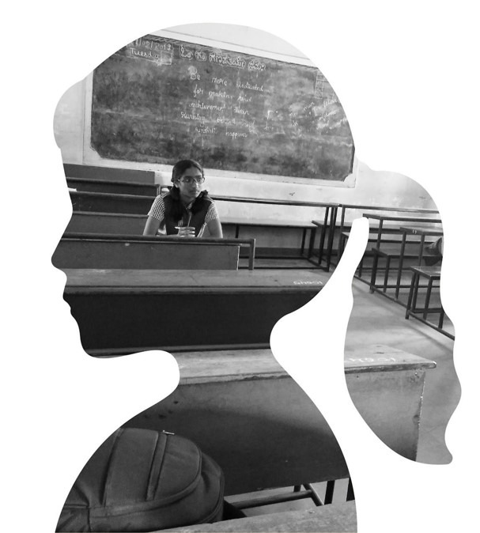
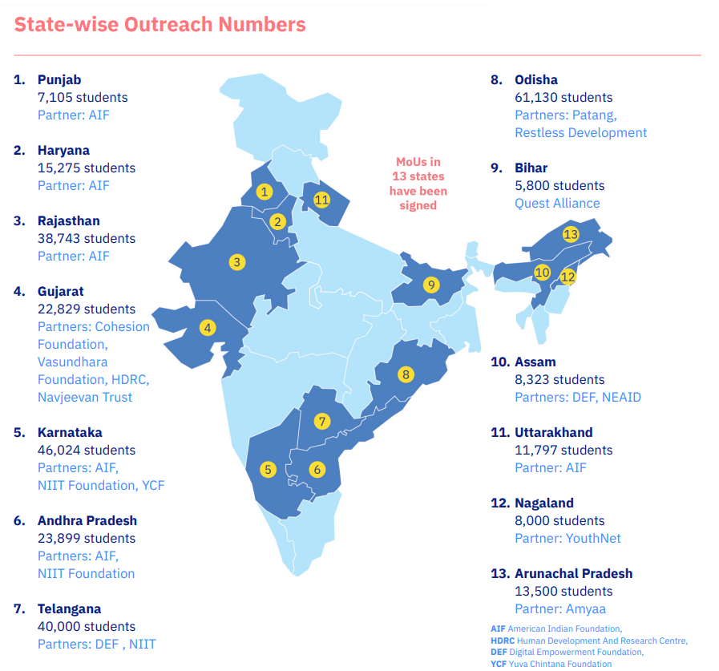

IBM SkillsBuild
Earlier known as IBM STEM for Girls — a digital fluency and life-skills curriculum, developed with Quest Alliance, to help students in government secondary schools explore STEM careers.
IBM SkillsBuild
#TheFutureisMine
IBM SkillsBuild earlier known as IBM STEM for Girls (Science, Technology, Engineering and Mathematics) is a digital fluency and life skills curriculum designed to help girls in government secondary schools break gender stereotypes and explore the possibilities of STEM-enabled careers, developed in collaboration with Quest Alliance.
Why IBM SkillsBuild (STEM: Science, Technology, Engineering and Mathematics for Girls)?

There is a need to create an enabling ecosystem where girls are encouraged and supported to explore careers in Science, Technology, Engineering and Mathematics (STEM).
Only 44% of undergraduate students across India are women and even fewer pursue careers in STEM (Science Technology Engineering Mathematics).
Why IBM SkillsBuild (STEM for Girls) at School level?
- Generate interest of the students and create an environment where they want to explore and continue their schooling thereby reducing the dropout rate
- India’s percentage of scientists, engineers and technologists who are women is only 14%
- Students will be equipped with skills which will open up new career path for them
- Jobs in the next decade that will require STEM is going to rise by 80% in India
- STEM careers offer higher pay and longevity by 24%
- To create a generation of students who do critical thinking and generate ideas to solve the problems especially concentrating on sustainability
- Provide practical Experiences
- Show real life connection
- Provide 21st century skills
- To generate interest of students to continue for higher studies
Challenges: Dropout Rate: 2019-2020
Dimapur District | Male | Female | Total |
Class 6-8 | 19.43 | 17.97 | 18.72 |
Class 9-10 | 30.77 | 25.27 | 28.16 |
Kohima District | Male | Female | Total |
Class 6-8 | 26.97 | 29.07 | 28.03 |
Class 9-10 | 31.13 | 31.24 | 31.19 |
National Average | Male | Female | Total |
Class 6-8 | 0.07 | 0.00 | 0.00 |
Class 9-10 | 10.25 | 11.58 | 10.94 |
The applications received in the year 2020 for Class 11 Admission in Government Higher Secondary Schools in Nagaland.
Statistics of Applications (Stream wise) | |||
Name of Stream | Total | Male | Female |
Arts | 4820 | 2285 | 2535 |
Science | 465 | 239 | 226 |
Commerce | 170 | 100 | 70 |
Total | 5455 | 2624 | 2831 |
Strategies for Student Engagement
Enablers for Class Room Delivery
Curriculum
A curriculum for grades 8 to 10 focused on building coding projects, gender sensitization, building 21st century skills and career exploration to understand STEM careers. We use MIT’s Scratch platform to introduce coding. The methodology uses experiential and project-based activities. Share-out events play an important role in creating spaces for student expression.
Capacity Building
Facilitators play a key role in curriculum delivery at the school. The support of teachers is very important for effective delivery at the school level. Thus, we have a capacity building model for both. It is a balance between building perspective, introducing future technology and work trends, and building facilitation skills. In 2021, 7,330 teachers were trained to become 21st century facilitators with increased awareness on teaching techniques, the gender divide in STEM, and the need for building STEM mindsets among students.
Volunteering
IBM volunteers play an important role in the learning experience. They contribute to the Scratch coding sessions, sharing their career journeys and helping students build their career pathways.
Key Strategies for Strategic Focus Areas
Role Model Interactions (RMIs)
In 2020, the program introduced Role Model interactions as a key strategy to demystify STEM careers and mindsets by having women, who have overcome barriers in their personal and professional lives, speak to students. 187 role model interactions were conducted in 2021, which reached 45,538 students and increased awareness about different career opportunities.
Hackathons and Ideathons
1,08,433 students participated in Ideathons conducted across 8 states in 2021. Selected 4296 students participated in Hackathons, and created prototypes in 49 physical camps and 1 online camp. By seeding ideas and generating innovations, these sessions enriched the STEM mindset of students. 283 facilitators and 58 teachers were trained on the Ideathon process, who in turn led the processes in schools.
Parent Engagement
As a result of the blended model, parent engagement and involvement are enhanced. As learning moved inside the home, parents had easier access to their
children. Parents also took part in the RMIs, webinars and engaged with the IVRS messages. As of March 2022, 1,19,236 parents were engaged by facilitators
through WhatsApp messages, phone calls, and in-person visits to discuss career pathways of their children, and student well-being and progress.
YouthNet in partnership with IBM, Department of School Education, Government of Nagaland and Quest Alliance
Youthnet signs MoU with IBM, the Department of School Education, Govt. of Nagaland and Quest Alliance to implement STEM for Girls among adolescent girls and boys studying in selected Government Secondary Schools in Nagaland in the current academic year i.e. 2021-2022.

IBM SkillsBuild (STEM for Girls) District coverage in Nagaland
IBM STEM for Girls is currently in three districts in Nagaland, namely Dimapur District, Kohima District and Kiphire District. The team plans to reach out to more districts in the coming future.
There are a total of 69 Government Schools and Government Higher Secondary Schools under IBM STEM for Girls. Out of the 69 Government Schools, 12 are Model Schools and the remaining 57 are non-Model Schools.
- Model Schools: YouthNet facilitators work with students, assisted by two government teachers in each school.
- Non-Model Schools: Three government teachers from each school undergo the Quest Alliance MasterCoach training programme to facilitate students.
MasterCoach is a professional development programme that enhances mastery, agency and purpose among educators, to create blended-learning ecosystems and 21st century classrooms.
Districts: Dimapur, Kohima and Kiphire.